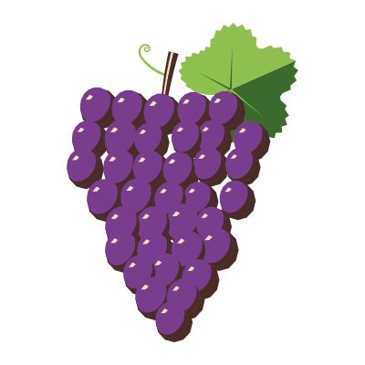
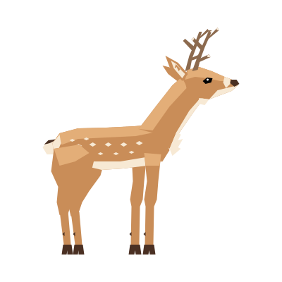
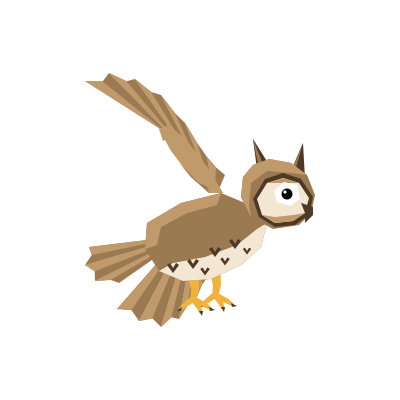
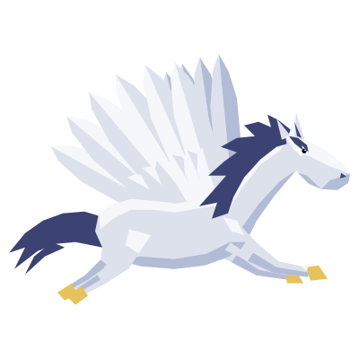
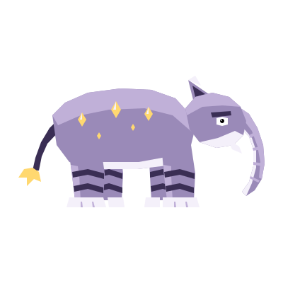

An island farming game on WAX
From seed
to harvest.
A calm game about one island that is truly yours, the crops you raise on it and the creatures that wander by. Here is how a single day goes.

Chapter one · The harvest
One sunflower.
One day.
Every one of the 64 crops is drawn through each stage of its life, so you can watch your field change while you tend it.
-

Stage 1 · 5:40 am
A handful of seeds.
Before the sun is properly up, it is just this: a few striped seeds and an idea of where they should go.
-
Stage 2 · 6:15 am
Into the soil.
Pressed into a tilled plot on your island. From here on you see your field from above, just as it looks on the map.
-

Stage 3 · 8:30 am
First green.
Two small leaves, the first sign that something is happening. There is no rush; it grows while you get on with your day.
-

Stage 4 · 10:50 am
Reaching up.
A ring of broad leaves spreads over the soil. Each stage is its own drawing, faceted and flat, with no outlines.
-

Stage 5 · 1:00 pm
The bud.
High sun, a closed green bud in the middle of it all. Almost there.
-

Stage 6 · 5:20 pm
Full bloom.
Golden petals open just as the light turns golden too. Ready whenever you are.
-

Stage 7 · 6:40 pm
Harvest.
One flower, cut and carried home, with a few seeds to start again tomorrow. There is an eighth drawing too: a wilted one, for the plots that are left alone a little too long.
And that was just one
Sixty-three more
are waiting.
Pumpkins and peas, coffee and cacao, and a few things that do not grow anywhere else, like glowing mushrooms and a plant that grows eggs.
 Pumpkin
Pumpkin Strawberries
Strawberries Corn
Corn Carrots
Carrots
Grapes Watermelon
Watermelon Glowcap
Glowcap Egg plant
Egg plant
64 crops · 8 drawings each, from seed to harvest and wilted
Chapter two · The visitors
Then the field
had company.
Late in the afternoon, the island comes alive. More than 50 creatures live in Unclaimed Acres, from foxes and owls to a few you will only ever meet here.


Two ways to see them
From the side,
and from above.
Every creature is drawn twice: a portrait from the side, and a view from above for when it wanders across your island map.



Deer
Owl Moon cat
Moon cat Blossom stag
Blossom stag Crystal turtle
Crystal turtle
Pegasus Lantern giraffe
Lantern giraffe
Baku
Chapter three · The island
And all of it
happens here.
Your own island, generated once and kept on the WAX blockchain. It belongs to your wallet, and there is no other quite like it.

- Yours, on chain.Every island is generated and stored on the WAX blockchain, and owned by your wallet.
- Never the same twice.Peninsulas and bays, beaches and lakes, forests and terraced snowy mountains.
- At your own pace.No timers shouting at you. Plant in the morning, come back at dusk.
- 1island, yours alone
- 64crops to grow
- 8stages for each crop
- 50+creatures to meet

Plant your
first seed.
Connect a wallet to claim your island. Unclaimed Acres is in development; we will grow it the same way, one stage at a time.
Works with WAX Cloud Wallet, Wombat and Anchor.